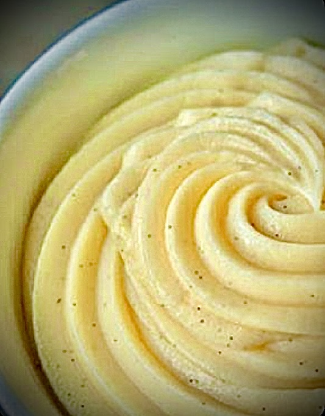
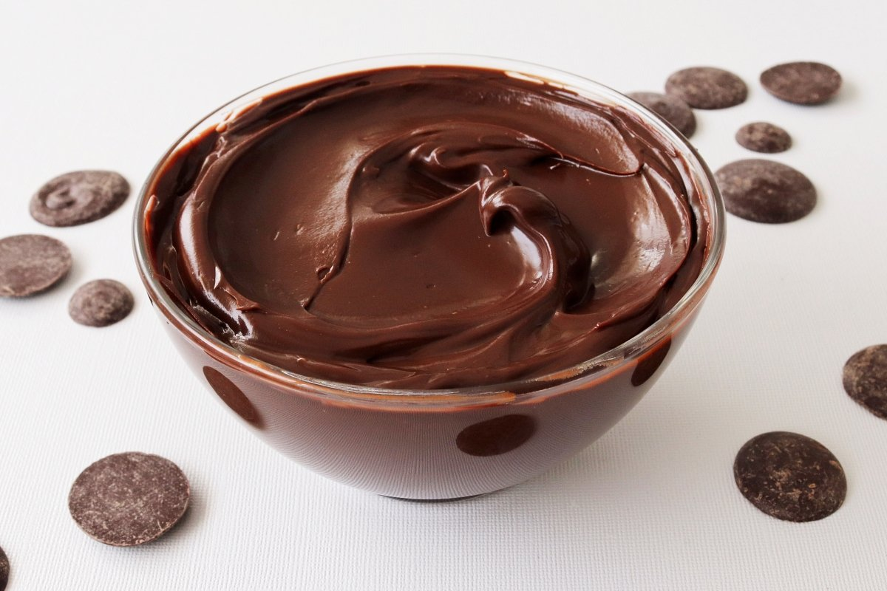
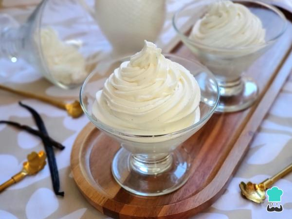

| Crema Pastelera |
 |
Suave, espesa y hecha con leche, yemas, azúcar y vainilla. |
Relleno para tartaletas, eclairs, pasteles y milhojas. |
| Ganache de Chocolate |
 |
Mezcla sedosa de chocolate y crema (nata). Puede ser líquida o firme según la proporción. |
Cobertura de pasteles, relleno de bombones o como dip para frutas. |
| Crema Chantilly |
 |
Nata montada con azúcar y vainilla. Ligera y aireada. |
Para acompañar postres, bebidas frías o como topping de cupcakes y pasteles. |
| Crema de Queso |
|
Queso crema mezclado con mantequilla y azúcar glas. Sabor suave y ligeramente ácido. |
Cobertura de cupcakes, red velvet, zanahoria, etc. |